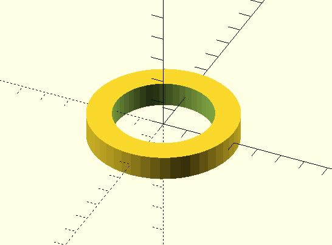
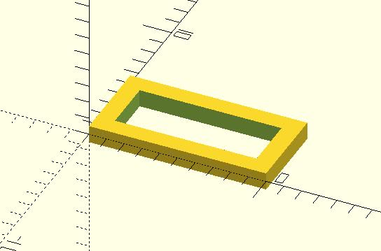
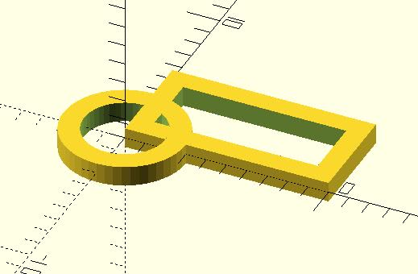
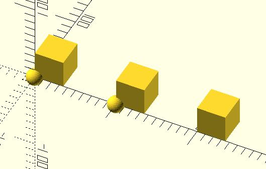

如果想要做個圓環要怎麼做呢？基本上可以有兩種方式。第一個方式是畫一個大圓、一個小圓，然後用 difference()。例如：
module circle_ring(radius, thickness) {
difference() {
circle(radius, $fn = 48);
circle(radius - thickness, , $fn = 48);
}
}
circle_ring(3, 1);
這就會建立一個圓環：

另一個方式是使用 offset()，例如：
module circle_ring(radius, thickness) {
difference() {
circle(radius, $fn = 48);
offset(r = -thickness) circle(radius, , $fn = 48);
}
}
circle_ring(3, 1);
結果基本上是一樣的，offset() 可以指定 r、delta 與 chamfer，在官方說明文件中有兩張圖，馬上就可以知道三個參數的作用：


那麼要做一個框呢？類似地…
module square_frame(dimension, thickness) {
difference() {
square(dimension);
offset(r = -thickness) square(dimension);
}
}
square_frame([10, 5], 1);
這會產生的結果是…

接下來如果要做一個三角形的框呢？接下來如果要做一個星星的框呢？接下來如果要做個愛心的框呢？你應該都會吧！
只是問題是，既然這個需求這麼常見，有沒有辦法寫個通用的 frame()，可以指定一個模型，自動變出框呢？可以喔！
module frame(thickness) {
difference() {
children();
offset(r = -thickness) children();
}
}
frame(1) circle(3, $fn = 48);
frame(1) square([10, 5]);
原本 circle_ring() 或 square_frame() 中的同樣的程式碼部份被抽取出來了，然後，呼叫 circle() 或 square() 的部份，被換成了 children()，這表示實際上會操作的子模組，必須進一步在呼叫 frame() 時指定，指定方式是在 frame() 之後接上子模組呼叫，像是 frame(1) circle(3, $fn = 48) 或 frame(1) square([10, 5])，執行的結果會是：

如果要操作的子模組不只一個，可以使用索引來指定操作的子模組是第幾個，例如：
module lineup(space) {
for (i = [0 : $children - 1])
translate([space * i, 0, 0 ]) children(i);
}
lineup(100) { sphere(10); sphere(10); }
lineup(100) { cube(35); cube(35); cube(35); }
指定多個子模組時，記得要使用 {} 括住，上面的程式中，$children 可以得知指定的子模組數量，因此，你指定了幾個子模組，就會將那幾個子模組排成一行：

因此，如果發現到有些操作，其實是通用的，可以抽取出來，像是移動、旋轉之類的，這類通用操作累積的越多，將來在設計模型時就會越方便。